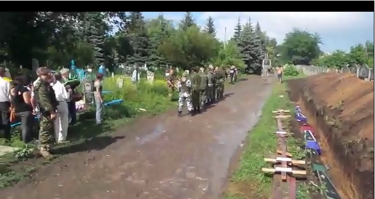

Ложь НТВ: в Славянске силовики расстреляли похоронную процессию
Российский канал НТВ в своем сюжете о похоронах погибших «ополченцев» в Славянске сообщил о том, что похоронная процессия была обстреляна украинскими войсками.
«На северном кладбище Славянска сегодня хоронили бойцов народного ополчения.Погибших в боях за Славянск и Семёновку провожали в последний путь трехкратным салютом из автоматов.Когда раздались выстрелы в воздух, украинские силовики открыли по траурной процессии огонь на поражение», — сказано в сюжете.
Однако сами «ополченцы» не заявляли ни о каком обстреле процессии.К примеру, в «Сводке событий от Игоря Стрелкова от 11.06.14» сказано лишь: «Сегодня в Славянске похоронили 10 погибших ополченцев.Хоронили в закрытых гробах.Надо заметить, что Пономарева «арестовали» не в первый раз.»При этом ополченцы сообщают о том, что в это время велась стрельба в других частях города.По всей видимости, оттуда и слышны выстрелы.
Напомним, что Игорь Стрелков (Гиркин) руководит так называемой «самообороной ополченцев» города Славянска.В так называемой Донецкой народной республике его назначили «министром обороны».
Если же посмотреть полный вариант видео с похорон сепаратистов, которое частично использовало в своем сюжете НТВ, можно увидеть, что процессию никто не расстреливал.За кадром действительно слышатся звуки выстрелов, но зрителю становится очевидно, что стреляют не по похоронной процессии.
https://www.youtube.com/watch?v=sftWT4mPdAM
Posted On: 2014-06-11T21:00:00

Content Date: 2014-06-11
Download Date: 2021-07-16
Document ID: L0C04FD62